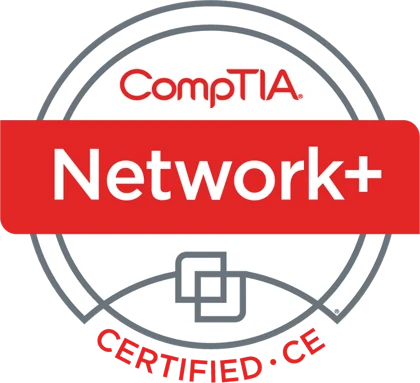

cal1ber
Florian · Ethical Hacker & Penetration Tester
exploit · report · repeat
My background is in network infrastructure, where I managed routing, firewalling and access networks for an internet service provider.
I then spent two years as an incident responder in a 24/7 international CSIRT, triaging alerts across SIEM and EDR platforms and handling incidents end to end, from phishing and account compromise to DDoS.
Today I focus on offensive security: Active Directory attack paths, web application testing and privilege escalation. Working on the defensive side taught me how attacks are detected; I use that to test more realistically and to write findings that teams can act on. I'm currently preparing for CPTS and OSCP.
- Vulnerability assessment of enterprise infrastructure (Nessus, Nmap, Burp Suite)
- Manual validation of findings to separate exploitable issues from false positives
- Technical reports with evidence, impact and remediation
- Alert triage across SIEM, EDR and sandbox tooling
- End-to-end incident handling: phishing, compromised accounts, DDoS
- Coordination of authorised penetration tests and perimeter whitelisting
- Routers, firewalls, OLT/DSLAM and PPPoE infrastructure
- Troubleshooting and change management on production networks
// certifications ls ~/certs

// writeups ls ~/labs --pinned
Offensive security
Network, web and Active Directory assessments, from recon to report.
- Penetration testing (network, web, AD)
- Vulnerability assessment
- Active Directory attacks: Kerberos, AD CS, delegation, relay
- Linux & Windows privilege escalation
- Web application testing (OWASP Top 10)
- Password attacks & hash cracking
toolsnmap · Burp Suite · Nessus · ffuf · gobuster · sqlmap · Metasploit · BloodHound CE · Impacket · Rubeus · Certipy · mimikatz · hashcat
Detection & incident response
Two years in a 24/7 international CSIRT.
- Alert triage across SIEM, EDR and sandbox
- Incident handling, end to end
- Phishing campaign analysis & reversing
- Containment: IOC & IP blocking
- Account compromise investigation
- DDoS & web attack response
- Incident reporting to management & legal
- Network traffic analysis
- Ticketing & case management
toolsSplunk · CrowdStrike · Microsoft Defender / MDO · TheHive · CAPE Sandbox · Imperva · Akamai · ServiceNow · Wireshark
Networks & systems
Network administrator at an internet service provider, from the data centre to the customer edge.
- ASN peering in data centres (BGP)
- Firewall installation & configuration
- Edge routers & ISP access gear (DSLAM, OLT, PPPoE, CPE)
- Routing & switching, L2/L3, MPLS rerouting
- Backbone troubleshooting & service restoration
- Wi-Fi site surveys & hotspot rollout for large events
- TCP/IP, DNS, DHCP, TLS
- Linux & Windows administration
- Pivoting & tunnelling
- Bash & PowerShell scripting
toolsCisco · MikroTik · Palo Alto · FRITZ!Box · Kali · VMware · Docker · SSH · socat · PowerShell
Hardware & embedded
Board-level work, and where I'm heading next: automotive security.
- Electronics, soldering & board-level diagnosis
- Flash memory programmers
- ECUs & gateways, CAN, UDS / J1939 (learning)
- TARA, ISO/SAE 21434, UN R155 (learning)
Frameworks & reporting
How findings get scored, mapped and explained.
- OWASP Top 10
- MITRE ATT&CK
- CVSS-based vulnerability prioritisation
- Pentest reports & remediation guidance
Let's talk.
Open to penetration testing and offensive security roles, remote or in Italy. Email is the best way to reach me.
$logoutConnection to cal1ber closed.